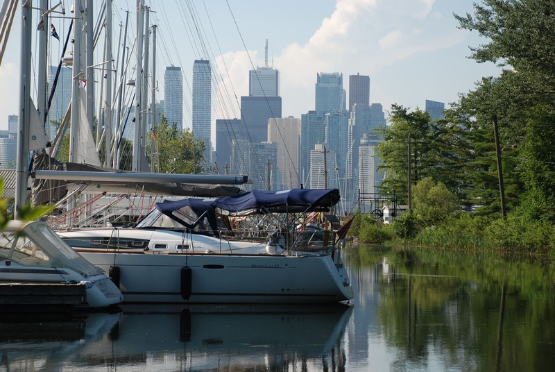

Welcome to my personal travel blog!
Exploring the Serenity of Toronto Islands
Tired of the hustle and bustle of the city in Toronto?
Toronto Islands are a serene oasis located just a short ferry ride away from the bustling city of Toronto, Canada. These islands, nestled in Lake Ontario, offer a peaceful escape, providing visitors with a unique opportunity to unwind, relax, and connect with nature.
The Toronto Islands consist of a chain of small islands, each with its own distinct charm and attractions. Visitors can explore several interconnected islands, such as Ward's Island, Centre Island, and Hanlan's Point. Each island offers a plethora of activities and experiences, making it a perfect destination for people of all ages.
One of the main draws of the Toronto Islands is their stunning natural beauty. Lush greenery, sandy beaches, and picturesque landscapes abound, making it an ideal spot for picnics, sunbathing, and leisurely strolls. With limited vehicular traffic, the islands provide a tranquil environment, allowing visitors to hear the soothing sound of waves crashing on the shore and the melodies of chirping birds.
Centre Island, the most popular and accessible island, offers numerous family-friendly attractions, including Centreville Amusement Park, a quaint and charming amusement park with a range of rides and games. The Franklin Children's Garden and Far Enough Farm are perfect for kids, providing an educational and interactive experience with farm animals and nature.
For those seeking a more adventurous experience, Hanlan's Point is known for water sports activities, such as kayaking and paddleboarding. The island also boasts some of the best views of the Toronto skyline, making it a popular spot for photographers and sunset enthusiasts.
Ward's Island is a tranquil retreat with a bohemian vibe, featuring quaint cottages and scenic walking trails. It is an excellent spot to enjoy a quiet afternoon with a book or to indulge in a leisurely bike ride around the island.
No visit to the Toronto Islands is complete without taking a leisurely walk along the boardwalk, which offers stunning panoramic views of the lake and the city. As the sun sets over the water, the islands transform into a magical place, creating a peaceful and romantic ambiance.
Whether you're looking for a family outing, a romantic getaway, or a solo escape into nature, the Toronto Islands offer an idyllic setting to connect with the serenity of the outdoors. With its natural beauty, recreational activities, and peaceful atmosphere, the Toronto Islands truly provide a unique and unforgettable experience for all who visit.
Latest posts
Exploring the Serenity of Toronto Islands
In this post, I want to share my unforgettable experience on the Toronto Islands. Nestled just a short ferry ride away from downtown Toronto, these islands offer an escape from the hustle and bustle of the city.
Exploring sun-drenched Barcelona
Barcelona, the vibrant and culturally rich city, had always been on my travel bucket list. The allure of its stunning architecture, golden beaches, and lively atmosphere was simply irresistible. Finally, the day arrived when I embarked on a journey to the wonderful city of Barcelona, Spain.

Embracing the Magic of Prague: A Journey Through Time and Beauty
Embark on a journey of wonder and enchantment as we delve into the captivating story of my unforgettable trip to Prague. Nestled amidst the heart of Europe, Prague, with its timeless beauty, historical splendor, and rich cultural heritage, promised an adventure like no other.